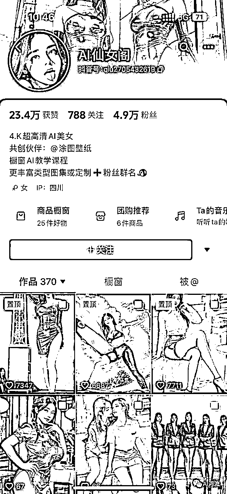
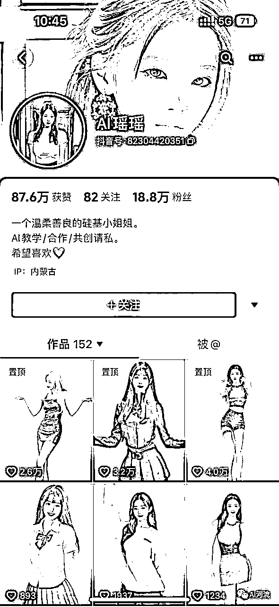
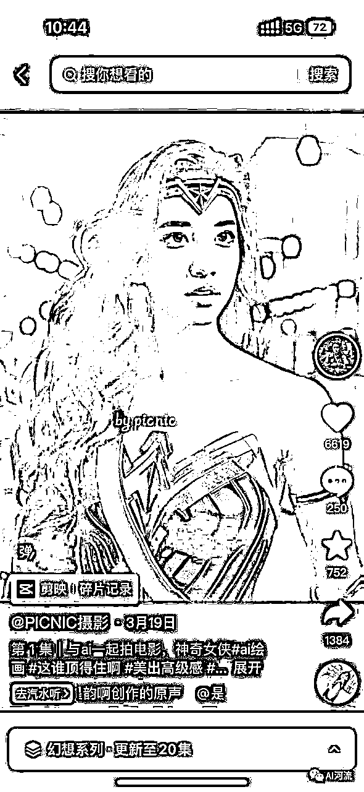
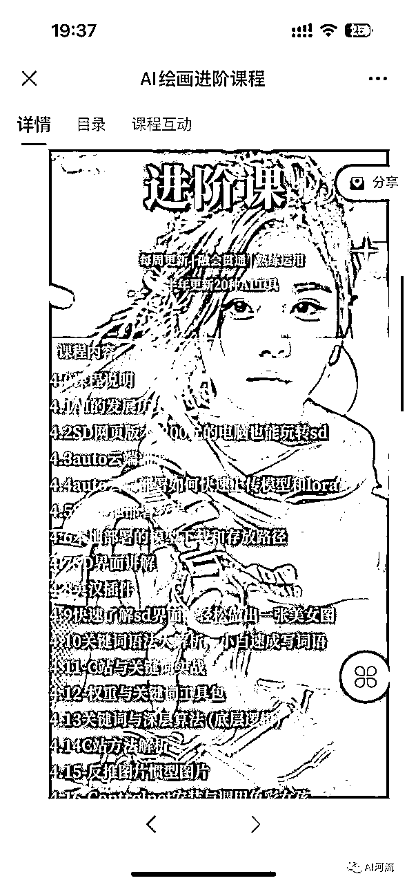
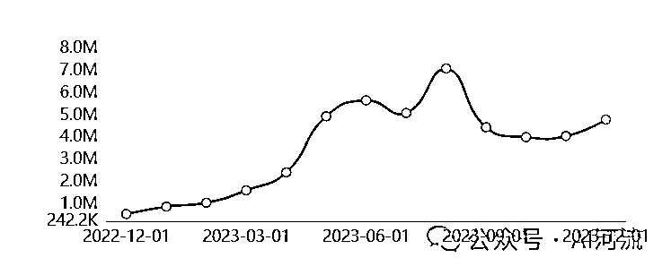
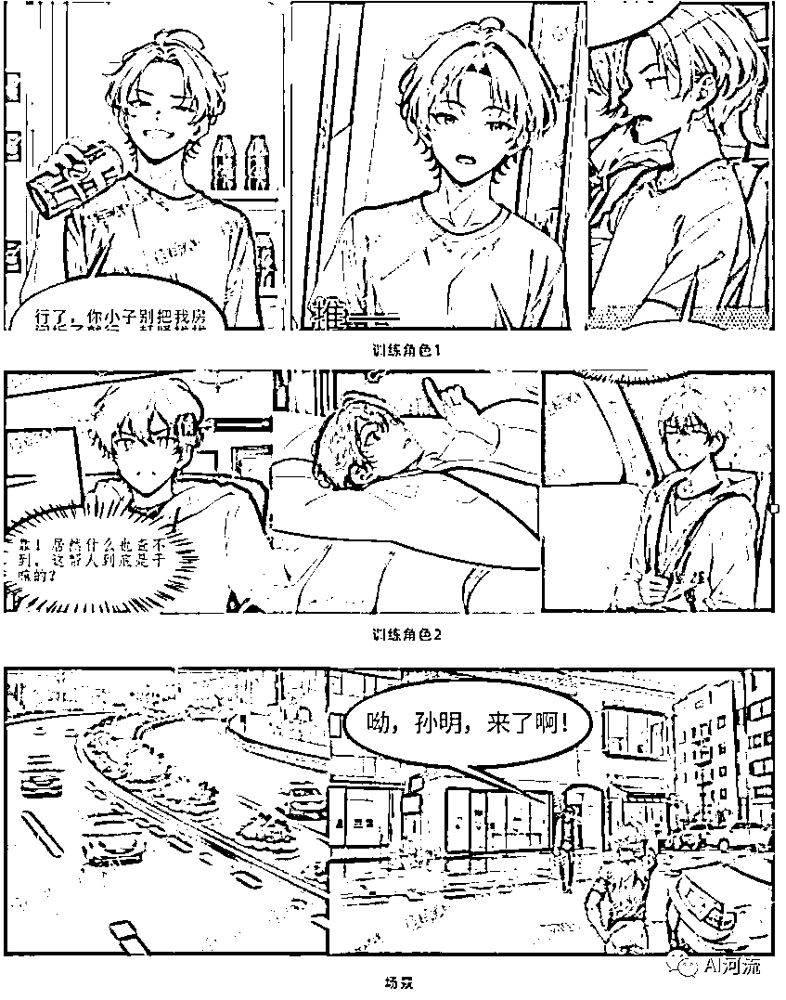
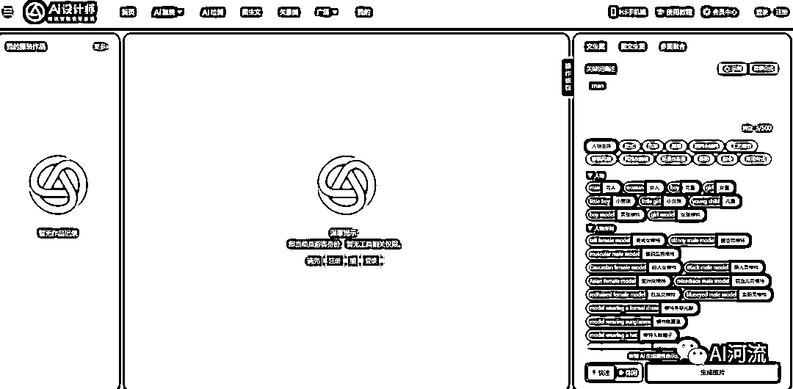
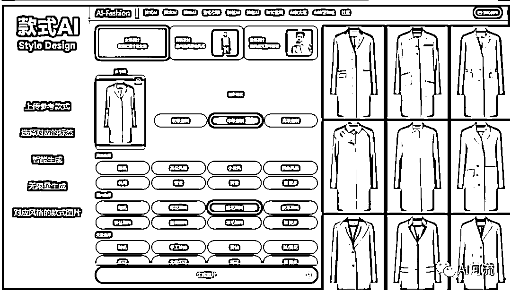

来源：https://aboqbe7f4x.feishu.cn/docx/TwtZdsbuuofLHZxWqDKcE9gAnce
hi，我是Mose，一个互联网大厂的前产品经理兼业余程序员今年二月份随着GPT爆发，我就开始逐渐入局AI赛道，亲身经历了很多AI相关的事情
8月份我分享过国内AI探索经历，比如AI老师，AI塔罗，AI商品图等等，详细见《00后大厂产品AI创业半年，最后靠卖课变现几十万》
8月份分享完后，我拜访了很多拿到结果的大佬, 最终决定all in AI出海所幸整体顺利，有时间在年底继续复盘
今天我主要分享——AI自媒体如何变现几十万，AI国内B端市场又有哪些机会和挫折,为什么选择出海。
新技术出现的时候，最先赚钱的赛道往往就在普及新技术的路上
从GPT账号购买、虚拟卡代充、内测API，到贩卖AI焦虑的知识付费和包层皮的国内聊天机器人。
今年3月份以来他们几乎算是最大的受益者之一。我后来加入的AI自媒体团队也是如此。
3月份的时候，关于AI的短视频资讯流量暴涨，衍生出以下几类账号
……
我们当时主要靠AI美图获取流量。利用MJ+SD能批量生产AI美女图文
以下是仅供参考的账号案例，与当时团队无关




AI美女流量核心是性需求，在尽量不违背平台规定下蹭IP，搞擦边，当时单个视频保底有几千~几万的流量，
爆火的时候有上千万播放。这个赛道的核心竞争力就是尽可能早的抓住流量机会，做出更高质量更有性吸引力或特殊爱好的美图
团队3月份开始做AI美图，正好赶上国内AI风潮爆发的时候.
我们巧妙得利用Midjourney的高质量图片和SD的控制性，生成逼真好看的美女图片
这个在现在可能很多人已经知道了，但在当时很多同行要么用MJ，要么用SD，最后发现无论如何都无法复刻我们同水平作品，在一眼假的AI图片中，我们自然也获得了更多曝光。分享下当时我们做美女图文思路，也许还有一定借鉴价值：
当然这里说的比较轻松，里面每步还是有很多坑和技巧，都是知易行难。不同账号有不同的小技巧，比如有的通过网红评论区图片截流获取流量，有的伪装成真人获取关注。
有了流量后，我们当时变现主要有3个途径：
由于作图质量比较好，会有不少人主动添加来咨询 “学习如何掌握AI绘画”，自然衍生了课程培训业务。
当时操盘知识付费的老板是一个经验丰富的创业者，和传统市面上几十~几百的课程不同，他看到了学员想学习AI绘画的背后述求是“希望副业赚钱”，他决定以AI副业赚钱为宣传点，做上千块高客单的AI绘画课程。
我参与了教学内容的构建，坦诚说其实就是把B站，C站等免费教学资料整理了下，几千块，几十块的课程和免费课程没有太大差别，多了1个老师手把手直播教学辅导而已。这种无本万利的高客单价，导致了当时虽然学员不多，但是总收益是一个月几十万。
AI绘画技术确实在深刻影响传统设计摄影领域。当时有不少企业衍生了AI图片设计的订单需求，比如NFT的图案设计，电商图，部分美工设计，Logo设计等等，我们通过抖音AI账号也承接了几十万的订单。这其实是一个短期信息差的事情，挺多企业早期有大量低价值的设计需求，自己不懂AI绘画不如外包出去，但随着时间推移，信息流动，整体市场在萎缩企业会发现使用AI工具其实也并不难
企业咨询其实就是高客单价的知识付费，被引发焦虑的不止是打工人，还有传统行业的老板。我接触了一些老板，普遍不了解AI但是对AI非常感兴趣，主要出于以下几点：
帮助老板科普对AI的认知确实是一个不错的生意，只是要有好的背书包装和口才。
从6月底开始，AI自媒体（抖音/小红书）整体流量骤降但入局者陡增
一方面是GPT爆火之后鲜有新的重大AI热点，大家发现该干嘛干嘛。另一方面大众对AI美图的新鲜感褪去，AI图片确实也在解构部分图片的意义价值，比如美女图依然无法摆脱“AI”感，人们看图背后的性幻想被AI冷冰冰浇灭，AI美女图的价值自然无法持久。
我想这可能也是海外做AI色情一直做不太大的原因。AI图片也在消解传统绘画背后的劳动结晶，以前的人们会为一张好看的手绘壁纸疯狂点赞，现在也会在同等质量AI壁纸下回复“尸块”。
很遗憾的是，国内AI流量的变现绝大部分靠“知识付费”，行业内也很少有人能回答出大众能用AI来干嘛，所以知识付费的价值绝大部分又引流到AI自媒体，其实会有点像“传销”的自我复制循环。
本来技术门槛不高、流量池又小的AI自媒体赛道涌入海量想挖金或者被骗进来挖金的用户，本来就空中楼阁的AI美图赛道自然难以为继。
tips：当然部分教学和资讯类依然还有流量。
1.4.1 AI知识付费是不是割韭菜？
这段经历算是我第一次接触知识付费整个引流-销转-交付流程，给我淳朴的内心带来了极大的震撼我不排斥知识付费，因为信息流通总是有阻力的，为有价值的信息付费是值得的。
但是，知识付费低门槛又高利润的属性注定了涌入者众多，课程鱼龙混杂。
我认为知识付费是不是割韭菜，取决于课程是否真实解决了用户需求。
很遗憾的是，市面上绝大部分AI课程在我看来就是割韭菜
（虽然这话很得罪人）
很多课程渲染AI焦虑，打着提升职场竞争力和赚钱名义实际上交付了安慰剂的课程。
包括我们当时的做法，所以我在拧巴中，一直观摩学习引流-销转-交付整个流程，但不愿过多参与。
目前的AI课程大部分并没有底层的价值支撑，就像PPT培训底层价值是真实的职场需求，摄影绘画培训底层价值可能是爱好与职业技能。一个没有太多底层价值支撑的知识付费就是空中楼阁和风口上的纸飞机，怎么可能走的长远。
这是为什么6月份之后，AI卖课几乎也难以为继，不只是竞争激烈的问题，时间久了热度过了，人们清醒了，楼也该塌了。
Tips：在部分垂直场景的AI知识付费依然提供坚挺的价值，到现在也卖的很好。比如绘画师的AI技能提效，企业老板的信息交流，自媒体的GPT文案生成等等。
我们很小的时候都在学习计算曲线函数的面积最大值，但实际生活并没有那么多的尝试。
很多人纠结几十元的定价会不会太高的时候，那个老板精准的刀法让我意识到世界是参差的，有时候需要挑选你面向用户的付费能力。
从我了解到到的知识付费或者订单外包的一些老板，很多活的不错的都是做高客单市场，做ROI高的事情。
这个在后面做AI出海的时候感悟更深，国内20元每月会员不仅利润低，订阅率也低，盈利能力完全没法和欧美市场比。
我个人不太擅长也不喜欢AI绘画的知识付费，因此6-9月期间大部分时间在看B端AI产品层面的机会。下面是一些我参与或者深入交流的toB赛道，简单分享个人拙见
自从我把代码卖了之后就没参与这个赛道，只是持续关注。这里分为商品换背景和衣服换模特两个场景，总的来说呈现几个特征：

我非常认可一个观点，一个没有太多门槛的赛道即便再有价值，只要被人熟知，也会卷得没有赚钱空间。所以AI很多赚钱的机会都在暗面，不太会去到处宣传，到处宣传战绩的赛道之后往往也是靠投流优势竞争的。
不少漫画产业的公司在看到AI绘画技术爆发后，一直在探索AI漫画的可行性，这里面依次涉及视频平台，漫画平台，小说厂商，工作室和几家AI漫画创业公司。

7月我参与某个知名公司的AI漫画项目，我们的尝试结论是——AI绘画技术确实提升了传统漫画的生产效率（我们测试下来大概是3-5倍），但是异常复杂。
本质上是取代了传统漫画生产流程中部分编剧，描边助理，上色助理的岗位，换上了一个需要精通AI绘画的助理。4，5月份市面上有不少AI漫画生产自动化工具，主打小说推文副业赚钱。无论是人物一致性，细节控制，镜头构成，还是画风等等方面，自动化路子暂时无法达到商用程度。
问题核心在于AI绘画底层技术存在各种缺陷：底模不够好，语义理解较差，控制性依然不够等等技术上的不足，就需要很多人工的操作补救，比如镜头背景不好就用Midjourney先生成底图，细节太多就添加简化lora，近景和远景的各类参数也各不相同等等，一个本来应该解决技术性问题最后落实到人的经验问题，一个本该是产品技术飞轮驱动的事情，最后又演变成了知识付费和劳务外包。
我期待AI视频生成技术的发展，也许之后漫画行业会消失，创作者能一步生成动态漫画或动漫。
七月份，我们和一位衣服制作工厂的老板深度交流，发现他花10万块买了一个AI平板，老板一直在吹嘘这个产品多么神奇，可以一键生成各种款式的衣服，我们拿过来一看大为震惊，其实就是Midjourney接口+封装了非常多的衣服相关的提示词（当时没截图，我找了行业竞品截图方便了解）

传统的衣服制作分为4步：1.找爆款 → 2.改款 → 3. 打板测试 → 4.确认上架设计师要基于爆款进行反复的改动，确定效果后会打板出样品给老板看，老板如果觉得效果不行会回去重新设计。
这个环节会花费很长的时间，因此服装领域老板对改款有明显的降本增效需求AI也恰好能在里面发挥较大价值
这一套AI工作流确实能提升工厂的设计效率据我们当时了解，这个赛道没有AI商品图这么卷，软件一年价格1-10w不等，整体还是非常有吸引力的。

8月份恰好有几个老板想组局试试AI改款赛道，我当时已经决定做AI出海，所以只是作为外包顾问参与产品设计，并没有持续对该行业深入了解，大家看个乐。
就像生财有术社区6月份就有人分享如何用AI绘画洗稿素材，去引流带货或者到私域。
这里面核心品类就是穿搭图文带衣服，七月份周围朋友尝试的时候，单人日收益也有上千块。
我非常看好AI的洗稿能力和价值，不管是短视频脚本，SEO的网页文章改写，营销素材的规避版权等等，既确保了质量，又极大降低制作和版权成本。
举我知道的例子：
……
期间我探索了挺多B端项目的，也了解到一些赚到钱的AI项目，但很遗憾，我除了各种经历并没有拿到实质结果。发现核心问题在于我技能和愿景不匹配
这导致了，比如期间有一个主动找来的几万块的AI订单，我并不想去吹牛接住订单。甚至有的老板提的产品构思是能实现的，但这件事情我认为无法解决背后的真实诉求就拒绝了所以经历了一遍toB各个项目，我收获了最大的价值——我大抵不适合也不想做toB的生意
尽管很多人说年轻人好，充满机会，但事实上年轻确实带来更多的阻力同样对AI的理解深度，甚至我是知识输出方，工作经历丰富的朋友会拿到远比我好的AI领域的薪酬和机会（虽然我确实不在意工作机会）在和老板们打交道的时候，也难免第一印象被看轻，合作的时候引发别人的信任感问题和压价……我不是在抱怨，只是在陈述遇到的现状，想创业的年轻朋友可能得做好心理准备也幸好年轻，我们当然还有很多风景可以看，这半年确实曲折精彩，过得很慢。
我这半年其实也是慢慢脱离等靠要的过程，深刻明白自己是自己的遥远救世主。
我接触过很多带光环的老板，了解越多越褪魅，
“世界真是草台班子构成的”
有的轻松年入百万的小老板会克扣几千块的尾款；有的人各种大厂总监title结果只会动嘴不动手，只想着跪舔上级糊弄下级；太多被动收入自由的老板只想白嫖，讨论许久都只拿收益不拿风险，匆忙开始又莫名其妙结束。
所以在我们弱小的时候，想去依靠别人是不现实，即便做成一些事，又不知有多少老板层层压榨只想独吃。所以到9月份我就决定彻底依靠自己了，拒绝了一些高薪机会或者合伙，我打算先靠自己去做一些事情并不是拒绝别人的帮助和合作.
强势文化和弱势文化的区别还在于自己的主动性和独立性，很多事情我必须得自己会做能做，后续才会去找更擅长的伙伴合作。
9月初我决定All IN AI出海，再失败就认命回互联网公司打工去吧
其实不止是我决定出海，是国内大部分的AI团队都在转向出海，国内AI活不下去。AI出海有几个显著好处。
在国内荒芜的AI市场，在海外却如火如荼。不少AI应用正在疯狂赚钱。
9月份对我而言也是个转折点，自己在出租屋里设计产品，敲代码，测试，试着社交媒体推广，慢慢进行SEO……
开始心态放平的等待结果，聚焦当下，不问未来。第一周产品上线，第一个月内测用户破了6K。第二个月尝试商业化开始用户破万，月入破万，第三个月SEO进入谷歌首页排名等等.
这里非常感谢生财有术的一些前辈的帮助指引，学会了很多出海技巧，所以第二次航海，我也申请成为了航海教练，希望也能帮助更多的人。
具体的出海过程得总结分享了，我会专门写一篇关于AI出海的详细分享，之后我也会陆续在这个公众号分享AI产品相关的内容。最后一句话总结我的2023年——“一地鸡毛，所幸初见微光”。我远离了颠倒梦想，也一步步获得了自己依靠自己的底气。
tips：最后欢迎AI从业者朋友加我交流。